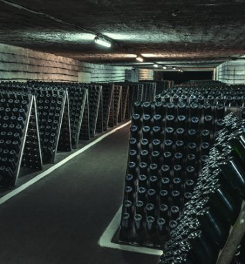
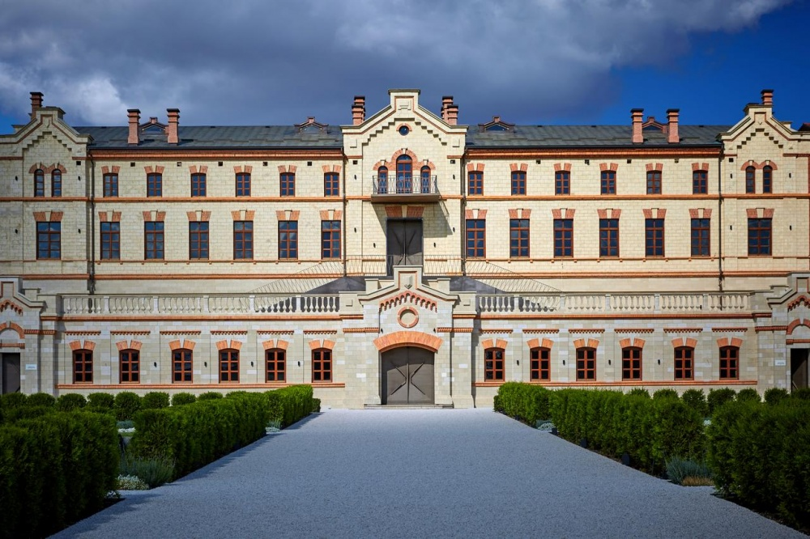
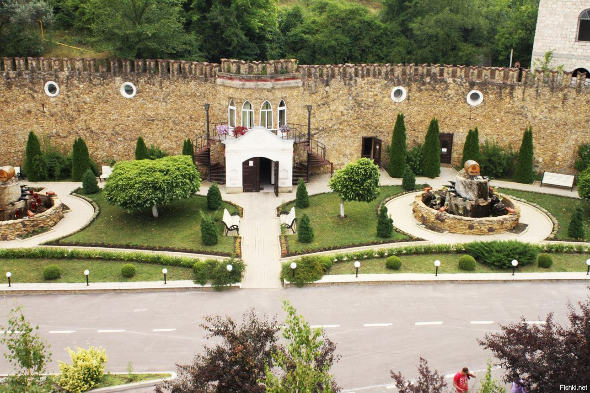
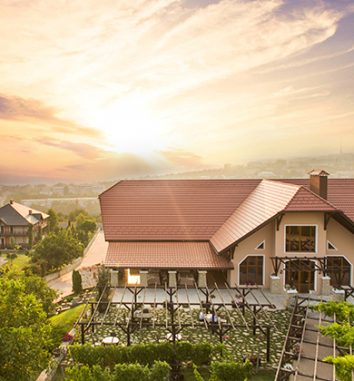
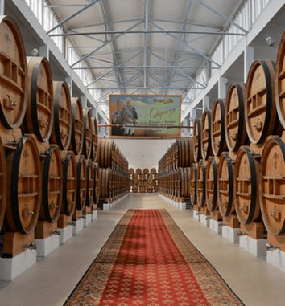
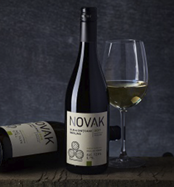
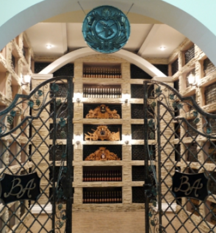

Lista vinariilor din Moldova

Cricova
Combinatul de vinuri Cricova SA a fost fondat în anul 1952, reprezentând un complex subteran unic, cunoscut pentru labirinturile sale imense și în special pentru vinurile sale.
Combinatul de Vinuri cu sediul în orașul Cricova, Republica Moldova, este situat la 11 km de capitala Chișinău.[3]
I s-a decernat cea mai înaltă distincție de stat Ordinul Republicii, Combinatul de vinuri Cricova fiind unica întreprindere vinicolă care deține acest premiu.
Din 28 august 2003 a fost declarat prin lege obiect al patrimoniului cultural - național al Republicii Moldova.

Castel MIMI
La Castel Mimi suntem mândri de poziția noastră ca unul dintre cei mai buni producători de vin și una dintre cele mai frumoase destinații turistice din Moldova. Incluși în top 15 cele mai frumoase vinării din lume, noi prezentăm atât istorie, cât și arhitectură modernă celor 30.000 de vizitatori care vin în fiecare an din peste 80 de țări ale lumii. Vă invităm să vizitați singurul castel din Moldova, lăsându-ne să vă arătăm ceea ce face din Castelul Mimi o experiență cu adevărat de neuitat.

Mileştii Mici
ÎS CVC ,,Mileştii Mici” dispune de o colecţie de vinuri care a marcat faima întreprinderei pe piaţa internă şi pe arena internaţională a vinurilor.
În luna august a anului 2005, ,,Colecţia de Aur” Mileştii Mici a fost recunoscută de Guinness World Records ca fiind cea mai mare colecţie de vinuri din lume şi numără cca 1,5 mln. de butelii. Tot în același an este declarată de Parlamentul RM „Patrimoniul Cultural-Naţional al Republicii Moldova”.
Vinurile de colecţie cu marca comercială ,,Mileştii Mici” sunt vinuri excepţionale, cel mai vechi datînd din 1972. Rafinatele vinuri albe, cum ar fi: „Sauvignon 2013”, viguroasele vinuri roşii ,,Cabernet-Sauvignon 1987”, „Codru 1987”, sau delicatele vinuri de desert ,,Auriu 1986”, ,,Trandafirul Moldovei 1986” sunt apreciate la cel mai înalt nivel de vinificatorii din întreaga lume.

Château Vartely
Château Vartely – o perlă în industria vinificației și cartea de vizită a Moldovei, recunoscută și apreciată de-a lungul timpului de peste 100 000 de turiști din țară și de peste hotare.
Situat pe o colină, în apropierea Orheiului, Château Vartely oferă un adevărat deliciu peisajistic cu o priveliște amețitor de frumoasă și o arhitectură deosebită. Aici oaspeții se pot delecta cu bucate alese pregătite în restaurant, pot opta pentru cazare în una dintre cele 3 vile turistice și pot degusta colecția de vinuri în una dintre cele două săli de degustare. Mândria vinăriei însă o reprezintă colecția de vinuri Château Vartely ce au fost premiate cu peste 300 de medalii la concursuri internaționale de mare prestigiu.

KVINT
Fabrica de vinuri şi divinuri KVINT din Tiraspol este unul dintre cei mai mari producători de vinuri și distilate de vin din regiune.
Climatul unic, solul fertil, terenul deluros şi apropierea râului Nistru au creat condiţii favorabile pentru creşterea celor mai buni struguri. Fabrica deține 2000 ha plantaţii proprii de viţă-de-vie, echipamente moderne, tehnologii avansate, reţete originale, tradiţii antice şi desigur munca profesioniştilor – factorii ce permit fabricii să producă băuturi admirabile

Novak
Novak este o nouă viziune asupra vinificației tradiționale din regiunea de sud a Moldovei, care combină tradiții și tehnologii inovatoare, cât și calitate înalta în fiecare sticlă produsă.
Vinurile produse de vinărie se remarcă printr-un gust profund, intens și un buchet bogat în cele mai bune tradiții ale Lumii Vechi. Viile Novak sunt situate în zonele Comrat, Tartaul și Ciobalaccia, regiunea Cantemir. Aici sunt prezente atât soiuri clasice, de exemplu Merlot, Cabernet-Sauvignon, Chardonnay, Malbec, cât și soiuri tradiționale Rară Neagră, Feteasca Regală și altele. De asemenea, ar trebui să menționăm renașterea unor soiuri uitate precum Alb de Onițcani și Floricica, soiurile pe care unii experți le considerau pierdute în istorie

Barza Albă
Istoria companiei S.A. „Barza Albă” din municipiul Bălți a început în 1944.
Compania și-a început activitatea cu o unitate mică de prelucrare a strugurilor, amplasată la marginea orașului Bălți. Peste 75 de ani de activitate, S.A. „Barza Albă” a devenit întruchiparea bogatelor tradiții de vinificație din Republica Moldova. Compania dispune de un potențial de producere performant și un portofoliu reprezentativ de divinuri cu o vârstă de la 3 până la 50 ani. Înalta calitate a divinurilor S.A. „Barza Albă” a fost asigurată de generații consacrate artei divinului și tradițiilor în procesul de înnobilare prin învechire la butoi a distilatelor de vin. Produsele companiei au fost premiate la numeroase expoziții internaționale și concursuri de degustare, cu mai mult de 150 de medalii, din care 80 sunt de aur, 10 sunt „Grand Prix”, precum și premiul „Star AWORD” pentru merite deosebite în domeniul calității.